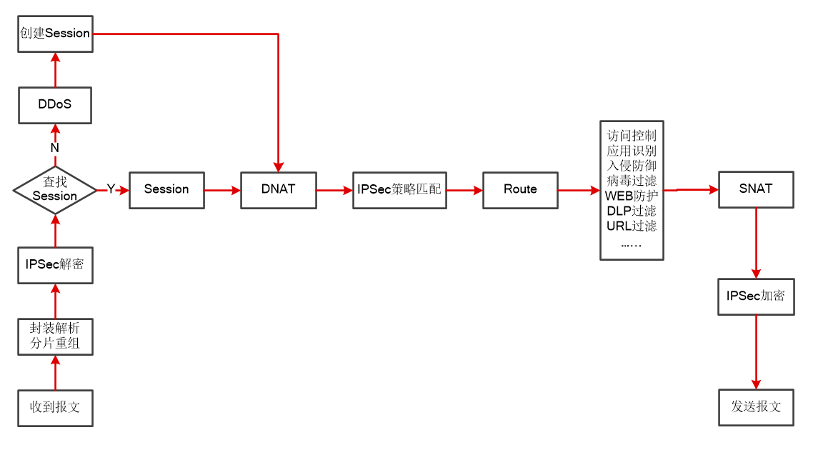

天融信防火墙系统所使用的NGTOS操作系统平台是基于模块设计的高稳定性操作系统，通过调用防火墙模块、VPN模块、DDoS防御模块、入侵防御模块、防病毒模块、僵木蠕模块、高级威胁防护模块等等一系列功能模块，控制外部非信任网络（如Internet）对内部信任网络的访问行为、内部网络中不同区域之间的相互访问行为以及内网网络对外部非信任网络的访问行为，为网络构建全面的安全保护屏障。
天融信防火墙系统处理数据包的基本过程如下图所示。

1）接收处理
防火墙接收到数据报文后进行解析，如果该报文为分片数据报文且防火墙的分片重组功能为开启状态，则重组数据报文，并区分出报文类型（本地报文、广播报文、二层透明转发报文、路由转发报文）；如果接收的数据包为IPSec协议保护的报文，则除以上步骤外，还需进行IPSec解密。
2）会话查询
对于新接收的报文，防火墙将根据报文包含的五元组查询本地会话表，判断该报文是否属于某个已经存在的会话。如果存在，报文将被直接转至3）处理；如果不存在，说明此报文属于一个新的会话，防火墙将调用DDoS防御模块检测报文是否合法。若检测结果为报文合法，会话表中会自动根据报文五元组信息创建一条新的会话记录。
3）DNAT规则匹配
如果数据报文满足防火墙已配置的DNAT（目的地址转换）规则条件，天融信防火墙系统会将报文的目的IP地址/端口），转换为规则中预先设置的转换后IP地址/端口；反之则不进行地址转换。关于地址转换策略的设置具体请参见 地址转换。
4）路由查询
报文类型为路由转发报文时，天融信防火墙会进行路由查询。针对新建连接，天融信防火墙会进行路由查询，并记录查询结果在会话表中；如果不是新建连接，则防火墙仅检查路由年龄是否变化（即路由是否发生变化），有变化时才查路由并重新确定下一跳，反之则不进行操作。若数据包经过了地址转换操作，防火墙将根据转换后的地址查询路由表。关于路由的设置具体请参见 路由。
5）IPSec策略匹配
天融信防火墙会根据报文的源IP地址与目的IP地址匹配IPSec VPN策略中所保护的隧道子网，如果匹配成功，则记录信息，并在防火墙发送数据报文之前根据相应IPSec VPN策略加密数据报文。关于IPSec VPN的配置具体请参见 IPSec。
6）安全引擎匹配
安全引擎描述了防火墙能否允许符合相关条件的报文通过。防火墙接收到报文后，匹配安全引擎，根据安全引擎命中的规则所指定的操作（放行、阻断或其他已配置的操作）处理该报文。关于访问控制规则的设置具体请参见 访问控制。
7）SNAT规则匹配
如果数据报文满足防火墙已配置的SNAT（源地址转换）规则条件，天融信防火墙会将接收的报文的源IP地址（或端口）转换为规则中预先设定转换后IP地址（或端口）；反之则不进行地址转换。关于地址转换策略的设置具体请参见 地址转换。
8）发送前处理
对于待发送的IPSec VPN报文，系统将对其进行重新加密。IPSec VPN加密后的报文目的地址有可能改变，所以此时防火墙将重新查询路由表，确定发送数据报文的下一跳，然后根据下一跳将数据报文转发出去。对于非IPSEC VPN报文，防火墙会直接根据路由查询阶段查询到的下一跳转发报文。